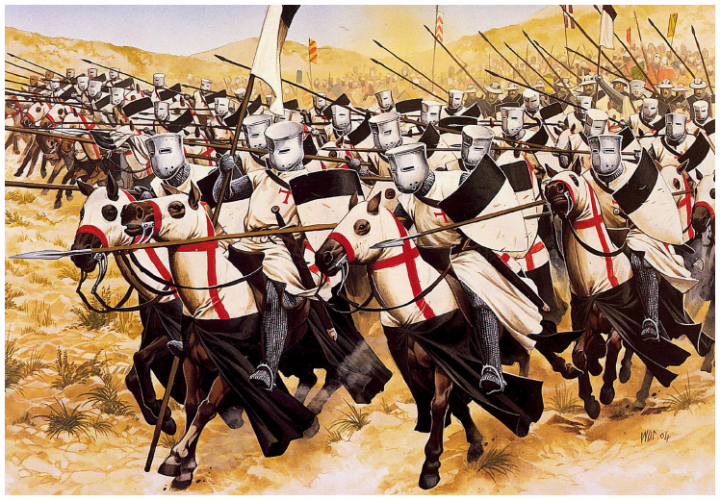
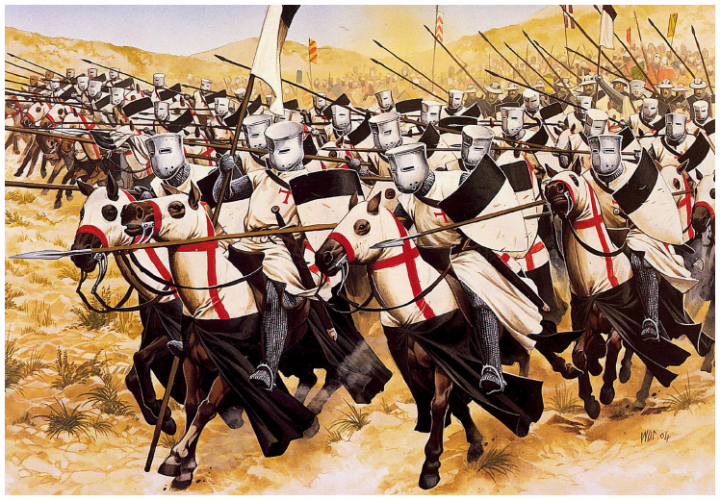

ჯვაროსნები და საქართველო
ჯვაროსნული მოძრაობა რომელსაც ადგილი ჰქონდა ევროპაში XI-XIV საუკუნეებში, უმნიშვნელოვანესი მოვლენაა მსოფლიოს ისტორიაში. მან დიდი კვალი დატოვა ევროპისა და მახლობელი აღმოსავლეთის კულტურულ და ეკონომიურ ცხოვრებაში. ჯვაროსნები იყვნენ თავისი დროის მოგზაურებიცა და მეომრებიც. ჯვაროსნულ მოძრაობას საფუძველი ჩაუყარეს რომის პაპებმა, განსაკუთრებით კი ურბან მეორემ. მან 1995 წელს სამხრეთ საფრანგეთის ქალაქ კლერმონში დიდი საეკლესიო კრება მოიწვია. მასში დასავლეთ ევროპის ყველა სახელმწიფოს წარმომადგენელი მონაწილეობდა. კრებაზე პაპმა მოუწოდა მორწმუნეებს რომ გაერთიანებულიყვნენ ქრისტეს საფლავის გამოსახსნელად, ვინაიდან მისივე განცხადებით, ევროპაში არსებული პრობლემების მიზეზი სწორედ ის გახლდათ, რომ ქრისტეს საფლავი ურჯულოთა ხელში იყო. პაპმა ისიც კარგად იცოდა, რომ მხოლოდ რელიგიური აღტკინება არ იქნებოდა საკმარისი მოტივაცია და ამიტომ დაამატა „გზა მოკლეა და ადვილი, ნადავლი კი დიდი“, მისმა ამ სიტყვებმა საყოველთაო აღტაცება გამოიწვია და დიდმა ნაწილმა იქვე მიიკერა ტანისამოსზე ჯვარი, ამის საფუძველზე ამ მოლაშქეებს შემდგომში ჯვაროსნები ეწოდათ. იქვე გადაწყდა ლაშქრობის თარიღიც. ის 1996 წელს უნდა დაწყებულიყო.

მაშინ როცა ევროპაში ჯვაროსნული მოძრაობა იწყებოდა საქართველოს მეფე დავით აღმაშენებელი გახდა. დავითის მიზანი საქართველოს თურქ-სელჩუკთა უღლისგან განთავისუფლება იყო. მან ქვეყნის გასაძლიერებლად სხვადასხვა ღონისძება გაატარა, მაგრამ სელჩუკთა წინააღმდეგ ბრძოლაში ძლიერი მოკავშირე სჭირდებოდა. მან კარგად გამოიყენა სელჩუკების მარცხი ჯვაროსნებთან და 1099 წელს, მაშინ, როცა ევროპელებმა იერუსალიმი აიღეს, ხარკი შეუწყვიტა თურქებს. ვინაიდან საქართველოსა და ევროპელი ჯვაროსნებისთვისაც მთავარ მოწინააღმდეგეს სელჩუკთა სახელმწიფო წარმოადგენდა, ისინი ერთმანეთის ბუნებრივ მოკავშირეებად იქცნენ. იერუსალიმის სამეფოს მეფე საქართველოში ჩამოვიდა და დავითთან მოლაპარაკებები გამართა. იერუსალიმის სამეფოს ძალიან უჭირდა მომძლავრებულ თურქთა შეკავება. 1121 წელს დიდგორის ველზე საქართველოს ისტორიაში ერთ-ერთი უმნიშვნელოვანესი ბრძოლა გაიმართა. აქ მოვიდა სელჩუკთა კოალიციური არმია რომლის მიზანი საქართველოს განადგურება და შემდეგ იერუსალიმის სამეფოს მოსპობა იყო ამ ბრძოლაში გამარჯვებით საქართველომ თავიც გადაირჩინა და ჯვაროსნებიც. სხვადასხვა წყაროს მიხედვით ამ ბრძოლაში ჯვაროსნებიც მონაწილეობდნენ, მაგრამ სოსო მარგიშივილი ეჭვის ქვეშ აყენებს ამ მოსაზრებას. ის ფიქრობს რომ ძველ წყაროებში ნახსენები „ფრანგები“ იყვნენ „ფრანკები“ ანუ დასავლეთ ევროპელი მეომრები. მას ამ მოსაზრებაზე არგუმენტად მოჰყავს ის რომ ამ დროისთვის ჯვაროსნები მძიმე მდგომარეობაში იყვენ და ვინაიდანაც წყაროეში ნახსენებია „ფრანგები“ ეს სულაც არ არის მყარი არგუმენტი იმისთის, რომ ვთქვათ_ჯვაროსნები დიდგორის ბრძოლაში დავითის გვერდით იდგნენ.
ურთიორთობა უფრო გახშირდა თამარ მეფის დროს. საუკუნის ბოლოს ჯვაროსნულ სამეფოებს ძალიან გაუჭირდა. ეგვიპტის გაძლიერებული სულთნები ავიწროებდნენ ყოველი მხრიდან. ზოგიერთი ავტორის მტკიცებით თამარს ჯვაროსნულ მოძრაობაში ჩართვა სურდა უფრო მეტიც მისი მემკვიდრის ლაშა გიორგის შესახებ ერთი ფრანგი რაინდი დე ბუა საფრანგეთში გაგზავნილ წერილში წერდა, რომ ქართველთა მხედრობა გამოემართა წმინდა ქალაქის გასათავისუფლებადო.
ტრაპიზონის იმპერია დაარსდა 1204 წელს მეოთხე ჯვაროსნული ლაშქრობის შემდეგ საქართველოს სამეფო კარის (თამარ მეფე) ინიციატივითა და დახმარებით. პირველი იმპერატორი იყო ალექსი კომნენოსი. იგი კომნენოსთა დინასტიის უკანასკნელი წარმომადგენლის ანდრონიკე I-ის შთამოამავალი იყო.
თამარს გადაწყვეტილი ჰქონდა ქართული მიწების საქართველოს ფარგლებში მოქცევა; ამისათვის საბაბად გამოიყენა ბიზანტიის კეისრის, ალექსი III-ის მიერ ბიზანტიაში მოღვაწე ქართველ საეკლესიო მსახურთა გაძარცვა 1203 წელს. საგანგებოდ შეკრებილმა ქართულმა ჯარმა ერთიმეორის მიყოლებით დაიკავა ჭანეთი, ტრაპიზონი, ლიმნია, სამსუნი, სინოპი, კერასუნტი, კოტიორა, ამასტრისი, ჰერაკლეა, პაფლაგონიისა და პონტოს სხვა ადგილები. ბიზანტიის იმპერატორმა ქართველთა წინსვლას ხელი ვეღარ შეუშალა, რადგან სწორედ იმ დროს კონსტანტინოპოლს დასავლეთიდან ჯვაროსნები შეესივნენ და აიღეს კიდეც. თამარმა ახლადჩამოყალიბებული ტრაპიზონის იმპერიის ტახტზე დასვა უფლისწულები, ძმები ალექსი და დავით კომნენოსები, წარმომავლობით ბერძნები. ისინი თამარ მეფის დის რუსუდანის შვილები და საქართველოს სამეფო კარზე, ქართული ტრადიციებით აღზრდილი იყვნენ.
ქართველები ენერგიულად ემზადებოდნენ მეხუთე ლაშქრობაში მონაწილეობისათვის, მაგრამ ეს განზრახვა ჩაიშალა საქართველოში მონღოლთა შემოსევის გამო.
ქართველი მეფეების სახელი აზიაში მყოფი ჯვაროსნებისთვის მხსნელებთან ასოცირდებოდა. მე-13 საუკუნის ოციანი წლებიდან საქართველოს საზღვრებთან გამოჩენილმა ახალმა დამპყრობლებმა საქართველოს განვითარება შეანელა და აიძულა ჯვაროსანთა დახმარებაზე ფიქრი შეეწყვიტა.
ჯვაროსნული ლაშქრობები ჯვაროსანთა მარცხით და მუსლიმანთა გამარჯვებით დასრულდა 1270 წელს. ჯვაროსნებმა დიდი შეცდომა დაუშვეს,როცა ბიზანტიის იმპერიას დაუპირისპირდნენ და კონსტანტინეპოლი აიღეს,მათ ასევე დიდი სისასტიკე გამოიჩინეს მაჰმადიანთა მიმართ იერუსალიმის აღებისას,რასაც ვერ ვიტყვით, პირიქით მაჰმადიანთა მიერ, სალაჰ ად-დინის თაოსნობით იერუსალიმის ხელახალ გამოხსნაზე. პაპები შემდგომშიც არაერთხელ ცდილობდნენ ჯვაროსნული ლაშქრობის ორგანიზებას, თუმცა ევროპელ მონარქებს, წინაპართა მწარე გამოცდილებიდან გამომდინარე, აღარ იზიდავდათ აღმოსავლეთი.

მაშინ როცა ევროპაში ჯვაროსნული მოძრაობა იწყებოდა საქართველოს მეფე დავით აღმაშენებელი გახდა. დავითის მიზანი საქართველოს თურქ-სელჩუკთა უღლისგან განთავისუფლება იყო. მან ქვეყნის გასაძლიერებლად სხვადასხვა ღონისძება გაატარა, მაგრამ სელჩუკთა წინააღმდეგ ბრძოლაში ძლიერი მოკავშირე სჭირდებოდა. მან კარგად გამოიყენა სელჩუკების მარცხი ჯვაროსნებთან და 1099 წელს, მაშინ, როცა ევროპელებმა იერუსალიმი აიღეს, ხარკი შეუწყვიტა თურქებს. ვინაიდან საქართველოსა და ევროპელი ჯვაროსნებისთვისაც მთავარ მოწინააღმდეგეს სელჩუკთა სახელმწიფო წარმოადგენდა, ისინი ერთმანეთის ბუნებრივ მოკავშირეებად იქცნენ. იერუსალიმის სამეფოს მეფე საქართველოში ჩამოვიდა და დავითთან მოლაპარაკებები გამართა. იერუსალიმის სამეფოს ძალიან უჭირდა მომძლავრებულ თურქთა შეკავება. 1121 წელს დიდგორის ველზე საქართველოს ისტორიაში ერთ-ერთი უმნიშვნელოვანესი ბრძოლა გაიმართა. აქ მოვიდა სელჩუკთა კოალიციური არმია რომლის მიზანი საქართველოს განადგურება და შემდეგ იერუსალიმის სამეფოს მოსპობა იყო ამ ბრძოლაში გამარჯვებით საქართველომ თავიც გადაირჩინა და ჯვაროსნებიც. სხვადასხვა წყაროს მიხედვით ამ ბრძოლაში ჯვაროსნებიც მონაწილეობდნენ, მაგრამ სოსო მარგიშივილი ეჭვის ქვეშ აყენებს ამ მოსაზრებას. ის ფიქრობს რომ ძველ წყაროებში ნახსენები „ფრანგები“ იყვნენ „ფრანკები“ ანუ დასავლეთ ევროპელი მეომრები. მას ამ მოსაზრებაზე არგუმენტად მოჰყავს ის რომ ამ დროისთვის ჯვაროსნები მძიმე მდგომარეობაში იყვენ და ვინაიდანაც წყაროეში ნახსენებია „ფრანგები“ ეს სულაც არ არის მყარი არგუმენტი იმისთის, რომ ვთქვათ_ჯვაროსნები დიდგორის ბრძოლაში დავითის გვერდით იდგნენ.
ურთიორთობა უფრო გახშირდა თამარ მეფის დროს. საუკუნის ბოლოს ჯვაროსნულ სამეფოებს ძალიან გაუჭირდა. ეგვიპტის გაძლიერებული სულთნები ავიწროებდნენ ყოველი მხრიდან. ზოგიერთი ავტორის მტკიცებით თამარს ჯვაროსნულ მოძრაობაში ჩართვა სურდა უფრო მეტიც მისი მემკვიდრის ლაშა გიორგის შესახებ ერთი ფრანგი რაინდი დე ბუა საფრანგეთში გაგზავნილ წერილში წერდა, რომ ქართველთა მხედრობა გამოემართა წმინდა ქალაქის გასათავისუფლებადო.
ტრაპიზონის იმპერია დაარსდა 1204 წელს მეოთხე ჯვაროსნული ლაშქრობის შემდეგ საქართველოს სამეფო კარის (თამარ მეფე) ინიციატივითა და დახმარებით. პირველი იმპერატორი იყო ალექსი კომნენოსი. იგი კომნენოსთა დინასტიის უკანასკნელი წარმომადგენლის ანდრონიკე I-ის შთამოამავალი იყო.
თამარს გადაწყვეტილი ჰქონდა ქართული მიწების საქართველოს ფარგლებში მოქცევა; ამისათვის საბაბად გამოიყენა ბიზანტიის კეისრის, ალექსი III-ის მიერ ბიზანტიაში მოღვაწე ქართველ საეკლესიო მსახურთა გაძარცვა 1203 წელს. საგანგებოდ შეკრებილმა ქართულმა ჯარმა ერთიმეორის მიყოლებით დაიკავა ჭანეთი, ტრაპიზონი, ლიმნია, სამსუნი, სინოპი, კერასუნტი, კოტიორა, ამასტრისი, ჰერაკლეა, პაფლაგონიისა და პონტოს სხვა ადგილები. ბიზანტიის იმპერატორმა ქართველთა წინსვლას ხელი ვეღარ შეუშალა, რადგან სწორედ იმ დროს კონსტანტინოპოლს დასავლეთიდან ჯვაროსნები შეესივნენ და აიღეს კიდეც. თამარმა ახლადჩამოყალიბებული ტრაპიზონის იმპერიის ტახტზე დასვა უფლისწულები, ძმები ალექსი და დავით კომნენოსები, წარმომავლობით ბერძნები. ისინი თამარ მეფის დის რუსუდანის შვილები და საქართველოს სამეფო კარზე, ქართული ტრადიციებით აღზრდილი იყვნენ.
ქართველები ენერგიულად ემზადებოდნენ მეხუთე ლაშქრობაში მონაწილეობისათვის, მაგრამ ეს განზრახვა ჩაიშალა საქართველოში მონღოლთა შემოსევის გამო.
ქართველი მეფეების სახელი აზიაში მყოფი ჯვაროსნებისთვის მხსნელებთან ასოცირდებოდა. მე-13 საუკუნის ოციანი წლებიდან საქართველოს საზღვრებთან გამოჩენილმა ახალმა დამპყრობლებმა საქართველოს განვითარება შეანელა და აიძულა ჯვაროსანთა დახმარებაზე ფიქრი შეეწყვიტა.
ჯვაროსნული ლაშქრობები ჯვაროსანთა მარცხით და მუსლიმანთა გამარჯვებით დასრულდა 1270 წელს. ჯვაროსნებმა დიდი შეცდომა დაუშვეს,როცა ბიზანტიის იმპერიას დაუპირისპირდნენ და კონსტანტინეპოლი აიღეს,მათ ასევე დიდი სისასტიკე გამოიჩინეს მაჰმადიანთა მიმართ იერუსალიმის აღებისას,რასაც ვერ ვიტყვით, პირიქით მაჰმადიანთა მიერ, სალაჰ ად-დინის თაოსნობით იერუსალიმის ხელახალ გამოხსნაზე. პაპები შემდგომშიც არაერთხელ ცდილობდნენ ჯვაროსნული ლაშქრობის ორგანიზებას, თუმცა ევროპელ მონარქებს, წინაპართა მწარე გამოცდილებიდან გამომდინარე, აღარ იზიდავდათ აღმოსავლეთი.